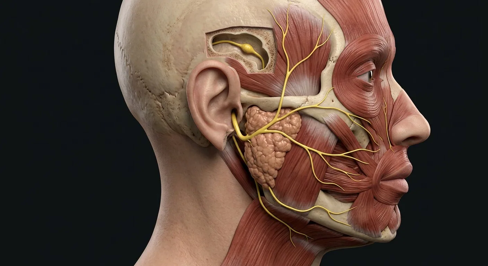

Facial motor nucleusInternal acoustic meatusFacial colliculusNervus intermediusGeniculate ganglionNerve to stapediusTemporal branchFacial sensation · CN VZygomatic branchParotid plexusBuccal branchGreater petrosal nervePosterior auricular branchChorda tympaniMarginal mandibular branchDigastric branch of VIISubmandibular ganglion pathwayStylohyoid branchCervical branch- 01Parotid plexus
- 02Temporal branch
- 03Zygomatic branch
- 04Buccal branch
- 05Marginal mandibular branch
- 06Cervical branch
- 07Facial motor nucleus
- 08Nervus intermedius
- 09Internal acoustic meatus
- 10Geniculate ganglion
- 11Greater petrosal nerve
- 12Nerve to stapedius
- 13Chorda tympani
- 14Posterior auricular branch
- 15Facial sensation · CN V
- 16Facial colliculus
- 17Digastric branch of VII
- 18Stylohyoid branch
- 19Submandibular ganglion pathway
How this part of the body works
CN VII contains motor fibers to muscles of facial expression, taste from anterior two-thirds of tongue (via chorda tympani), and parasympathetic pathways for lacrimal, submandibular and sublingual glands. It enters the internal acoustic meatus, bends at geniculate ganglion, traverses the facial canal and exits at stylomastoid foramen. Within the parotid it forms a motor plexus giving temporal, zygomatic, buccal, marginal mandibular and cervical branches; it passes through the gland but does not provide its secretomotor supply.
Read the anatomy, part by part
These 19 structures describe anatomy related to the chapter’s regional illustration. Each entry separates location, function and a clinical point.
Facial motor nucleus
Motor cell bodies in pons send axons looping around abducens nucleus before exit.
What it doesControls muscles of facial expression.
Clinical connectionUpper face often retains bilateral cortical input in supranuclear lesions.
Nervus intermedius
Sensory and parasympathetic root accompanying the motor root.
What it doesCarries taste and secretomotor pathways.
Clinical connectionExplains why CN VII is not solely motor.
Internal acoustic meatus
Temporal-bone canal shared by CN VII, CN VIII and labyrinthine artery.
What it doesConveys nerve toward facial canal.
Clinical connectionLesions here may affect facial movement and hearing/balance.
Geniculate ganglion
Sensory ganglion at first sharp bend of facial canal; greater petrosal branch arises nearby.
What it doesHouses sensory neuron cell bodies.
Clinical connectionHerpes zoster may affect geniculate region.
Greater petrosal nerve
Carries preganglionic fibers toward pterygopalatine ganglion.
What it doesSupports lacrimal and nasal/palatine gland secretion.
Clinical connectionA lesion proximal to branch can impair lacrimation.
Nerve to stapedius
Branch in facial canal to stapedius muscle of middle ear.
What it doesDampens stapes movement.
Clinical connectionProximal lesion can produce hyperacusis.
Chorda tympani
Crosses middle ear then joins lingual nerve (V3).
What it doesTaste from anterior two-thirds of tongue; submandibular ganglion secretomotor input.
Clinical connectionCan be injured by middle-ear disease or surgery.
Posterior auricular branch
Early extracranial branch to auricular muscles and occipitalis.
What it doesMoves posterior auricle and posterior scalp.
Clinical connectionArises before parotid plexus.
Parotid plexus
Branching motor network within parotid gland.
What it doesDistributes facial expression motor fibers.
Clinical connectionParotid secretion is mainly CN IX parasympathetic, not CN VII.
Temporal branch
Superior terminal branches to frontalis and superior orbicularis oculi.
What it doesRaises brow and closes upper eyelid.
Clinical connectionForehead weakness helps localize lower motor neuron injury.
Zygomatic branch
Branches across zygomatic region to orbicularis oculi and neighboring muscles.
What it doesCloses eye and coordinates upper facial expression.
Clinical connectionCorneal blink efferent limb is CN VII; afferent is V1.
Buccal branch
Motor branches to buccinator, orbicularis oris and upper lip muscles.
What it doesHelps seal lips and move cheek.
Clinical connectionNot the buccal sensory nerve of mandibular CN V3.
Marginal mandibular branch
Branch along mandibular margin to depressors of lower lip/chin.
What it doesShapes lower-lip expressions.
Clinical connectionAt risk during submandibular or mandibular surgery.
Cervical branch
Inferior branch descending to platysma.
What it doesTenses superficial neck skin.
Clinical connectionDeep facial sensation remains principally trigeminal.
Facial sensation · CN V
V1/V2/V3 provide most cutaneous sensory input from face, unlike VII expression branches.
What it doesSeparates sensory testing from facial movement testing.
Clinical connectionDo not diagnose trigeminal sensory loss from a VII motor lesion alone.
Facial colliculus
Dorsal pontine prominence formed partly by facial nerve fibers looping around abducens nucleus.
What it doesMarks internal VII course in fourth-ventricle floor.
Clinical connectionPontine lesion may combine VI and VII signs.
Digastric branch of VII
Early motor branch after stylomastoid exit toward posterior belly of digastric.
What it doesSupports jaw opening and hyoid elevation.
Clinical connectionBranches before intraparotid terminal divisions.
Stylohyoid branch
Motor branch of facial nerve to stylohyoid muscle.
What it doesElevates and retracts hyoid during swallowing.
Clinical connectionArises proximal to main facial expression branches.
Submandibular ganglion pathway
Chorda tympani fibers travel with lingual V3 to submandibular ganglion.
What it doesPostganglionic fibers stimulate submandibular/sublingual secretion.
Clinical connectionTaste fibers pass through without synapsing there.
Deeper structures and tissue layers
These 1 additional entries give anatomical context. They are deliberately not assigned a photographic pin on the regional image.
Stylomastoid foramen
Context only · no exact pointExit of CN VII from temporal bone behind ear.
What it doesDelivers motor trunk to face and neck.
Clinical connectionDistal lesions spare proximal taste/lacrimal branches.
Five questions about Facial nerve · CN VII
Short answers grounded in the structures described above. Use the illustrated guide for anatomical context.
What does the facial nerve control?
Cranial nerve VII supplies muscles of facial expression and also carries taste and parasympathetic fibers through specific branches.
Does the facial nerve provide most facial skin sensation?
No. Most facial skin sensation travels in branches of the trigeminal nerve; the facial nerve is mainly known for its motor supply to facial expression.
What is the facial motor nucleus?
Motor cell bodies in pons send axons looping around abducens nucleus before exit. Function: Controls muscles of facial expression.
Where is the internal acoustic meatus located?
Temporal-bone canal shared by CN VII, CN VIII and labyrinthine artery. Function: Conveys nerve toward facial canal.
What is the function of the greater petrosal nerve?
Function: Supports lacrimal and nasal/palatine gland secretion. Carries preganglionic fibers toward pterygopalatine ganglion.
Related anatomy guides
Follow these connected structures and body systems in the illustrated atlas.
 Skull & facial bonesName every one of the 14 facial and 8 cranial bones, with accurate visible labels and deeper views for hidden structures.↗
Skull & facial bonesName every one of the 14 facial and 8 cranial bones, with accurate visible labels and deeper views for hidden structures.↗ Cranial nervesTwelve pairs leave the brain directly — smell to tongue movement — and they are examined in strict order in every neurological exam.↗
Cranial nervesTwelve pairs leave the brain directly — smell to tongue movement — and they are examined in strict order in every neurological exam.↗ Trigeminal nerve · CN VMap facial sensation and masticatory motor fibers without confusing trigeminal CN V with facial CN VII.↗
Trigeminal nerve · CN VMap facial sensation and masticatory motor fibers without confusing trigeminal CN V with facial CN VII.↗ Eye · microscopic layersThree ocular coats, five classical corneal layers, aqueous route, lens suspension, macula and optic disc.↗
Eye · microscopic layersThree ocular coats, five classical corneal layers, aqueous route, lens suspension, macula and optic disc.↗Further reading
General anatomy references and related source chapters for continued study. These links do not make the digital illustrations clinical images or certify every anatomical variant.
This educational page is not medical advice and has not undergone formal clinical peer review. Spotted an error? Contact the editor.
Open the realistic interactive plate, label lines, focus view and self-test.